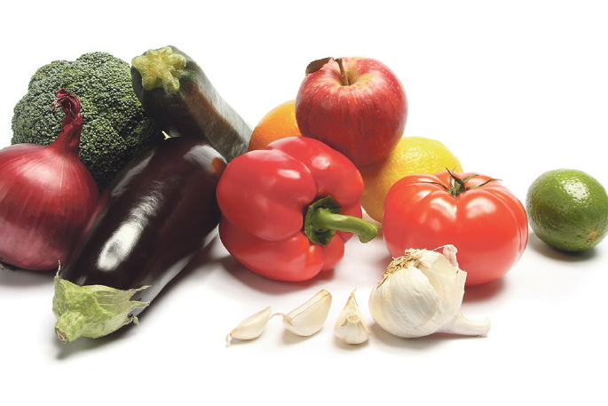
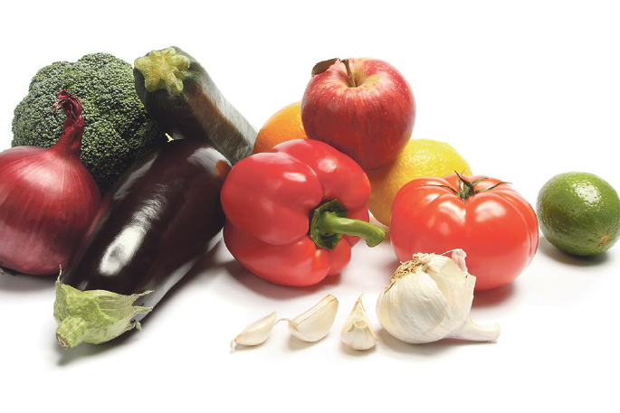

যশোরের বারীনগর সবজি মোকামে দাম একেবারে পড়ে গেছে। এতে কৃষকেরা হতাশ। তাঁরা সবজি সংরক্ষণে হিমাগার স্থাপনের দাবি জানান।
 মনিরুল ইসলাম
যশোর
মনিরুল ইসলাম
যশোর
যশোর সদর উপজেলার শাহবাজপুর গ্রামের কৃষক আলাউদ্দিন ৪০ কেজি শিম নিয়ে মোকামে গেলেন। ২ টাকা কেজি দরে সেই শিম বিক্রি করে ৮০ টাকা পেলেন। অথচ খেত থেকে শিম তোলা আর পরিবহনের জন্যই তিনি ১৪০ টাকা খরচ করলেন।
আলাউদ্দিন বলেন, ‘আমি তিন বিঘাতে শিম চাষ করেছি। ইতিমধ্যে ৫০ হাজার ১ লাখ টাকা খরচ হয়েছে। ৬০ হাজার টাকার মতো শিম বিক্রি করেছি। এখনো ৪০ হাজার টাকা ঘাটতি আছে। এখনো অন্তত তিন মাস ক্ষেতে শিম পাওয়া যাবে। ফলনও খুব ভালো হচ্ছে। কিন্তু দাম না পেলে শিম ক্ষেতে রেখে লাভ কী? ক্ষেত ভেঙে দিয়ে বোরো ধান চাষের সিদ্ধান্ত নিয়েছি।
 

© copyright Emil Sadekin Islam 2021